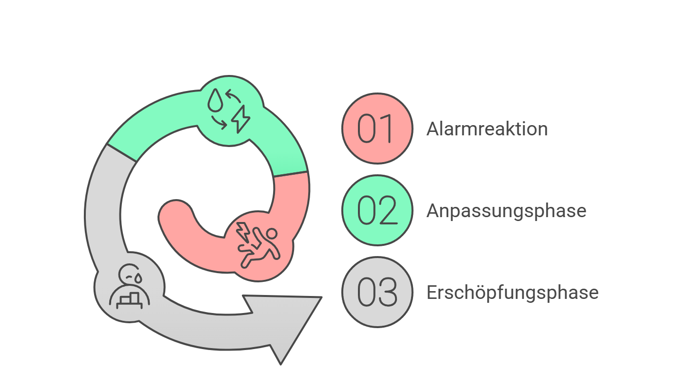

Ich funktionierte nur noch – aber innerlich war ich leer.
An diesem Tag habe ich geweint.
Nicht, weil etwas Schlimmes passiert war.
Sondern weil ich beim Blick in den Spiegel einfach nicht mehr wusste, wer mir da eigentlich gegenüberstand.
Ich sah dunkle Augenringe, fahle Haut, angespannte Gesichtszüge.
Und in meinem Inneren:
Nichts. Keine Freude. Kein Antrieb. Keine Energie. Nur Stille – und Druck.
Ich war nicht krank.
Ich hatte kein Burnout-Diagnosepapier.
Ich war einfach... erschöpft. Auf allen Ebenen. Körperlich. Mental. Emotional.
Aber ich funktionierte.
Hallo, ich bin Melanie Berger und möchte erzählen, wie ich von ständiger Erschöpfung und Überforderung zu neuer Energie und Lebensfreude gefunden habe.
Ich stand morgens auf, kümmerte mich um meine Kinder, ging zur Arbeit, hielt Meetings, lächelte höflich, kochte Abendessen, schrieb Geburtstagskarten.
Ich machte einfach weiter. Weil es niemand sonst tat.
Und doch – jeden Abend fiel ich wie ein Stein ins Bett. Ohne wirklich zu schlafen.
Mein Kopf arbeitete weiter. Meine Muskeln blieben angespannt.
Was ich damals noch nicht verstand: Mein Körper hatte längst aufgehört, normal zu funktionieren. Es war nicht nur meine Psyche – es war meine Biochemie, die aus dem Gleichgewicht geraten war. Ein unsichtbarer Kreislauf hatte sich gebildet, den kein positives Denken und keine Meditation durchbrechen konnte.
Ich war im Dauer-Alarmmodus. Und ich kam da nicht mehr raus.
„Ich darf nicht schwach sein.“
„Ich muss es schaffen.“
„Reiß dich zusammen.“
Das waren meine ständigen Begleiter.
Aber tief in mir wusste ich längst:
So kann es nicht weitergehen.
„Du musst einfach nur entspannen“, sagten sie. Aber wie genau macht man das, wenn man sich innerlich auflöst?
Natürlich habe ich versucht, etwas zu ändern.
Ich habe gegoogelt, Podcasts gehört, Blogartikel gelesen.
Ich habe Magnesium genommen, mir ätherische Öle gekauft, Atemübungen gemacht, Yoga probiert, mir eine Schlafmaske bestellt, CBD-Tropfen aus der Apotheke besorgt, sogar einen Kräutertee aus dem Reformhaus getrunken, der „Stresskiller“ hieß.
Aber nichts davon hat nachhaltig geholfen.
Rückblickend verstehe ich, warum:
Ich hatte immer nur versucht, die Symptome zu behandeln. Einen Tag Magnesium gegen die Muskelverspannung. Am nächsten Tag Baldrian, um besser zu schlafen. Dann wieder Yoga, um "den Kopf freizubekommen".
Jedes dieser Mittel behandelte nur einen kleinen Teil des Problems. Wie wenn man versucht, ein Leck in einem Boot zu stopfen, während Wasser durch fünf andere Stellen eindringt.
Was noch frustrierender war: Die wenigen Momente der Erleichterung waren so flüchtig. Kaum hatte ich das Gefühl, etwas würde helfen, war der Effekt auch schon wieder verflogen. Ein ewiger Kreislauf aus kurzer Hoffnung und langer Enttäuschung.
Und das Schlimmste: Mit jeder gescheiterten Lösung wuchs mein Selbstzweifel. War ich einfach zu schwach? Stellte ich mich zu sehr an? Immerhin schienen andere Menschen mit ähnlichem Stress klarzukommen.
Mal war ich ein paar Tage ruhiger.
Dann wieder völlig durch den Wind.
Schlaflos. Gereizt. Kraftlos.
Der schlimmste Moment?
Ich saß im Auto und hatte plötzlich das Gefühl, ich müsste einfach losfahren.
Weg. Ohne Ziel. Nur weg.
Aber ich konnte nicht.
Weil ich funktionieren musste. Weil ich Mutter bin. Weil ich Angestellte bin. Weil ich Partnerin bin. Weil ich… halt „muss“.
Ich dachte: Vielleicht bin ich einfach nicht belastbar genug.
Diese Gedanken kamen schleichend.
„Andere schaffen das doch auch.“
„Stell dich nicht so an.“
„Ist halt das Leben.“
Aber je mehr ich mich anstrengte, desto leerer wurde ich.
Mein Körper war müde. Mein Geist unruhig. Mein Herz… still.
Ich war nicht depressiv – ich war entkoppelt von mir selbst.
Und das Schlimmste war: Ich fand keine Lösung, die mich wieder zurückbrachte.
Der Wendepunkt kam an einem Freitagnachmittag – völlig unspektakulär.
Ich war gerade von einem langen Arbeitstag auf dem Heimweg, die Kinder bei Freunden, mein Kopf ein einziges Chaos.
In einem Anflug von Selbstfürsorge bog ich spontan zum kleinen Café in der Nebenstraße ab.
Ich bestellte mir einen Tee – und saß einfach da. Leer.
Dann kam sie.
Lisa.
Eine alte Bekannte, die ich früher oft bei Kita-Events gesehen hatte, aber seit Jahren aus den Augen verloren hatte.
Was mich sofort irritierte:
Lisa war früher genauso wie ich. Getrieben. Dauerangespannt. Immer unter Strom.
Aber jetzt?
Sie wirkte… ruhig.
Nicht müde. Nicht gleichgültig. Sondern klar, präsent, weich.
Ich fragte sie fast reflexartig:
„Sag mal… was hast du gemacht? Du siehst aus, als wärst du aus dem Spa gekommen.“
Sie lachte. Leise. Und sagte:
„Ich hab irgendwann verstanden, dass mein Stress nicht nur in meinem Kopf saß – sondern in meinem Körper.“
Diese Aussage ließ mich stutzen.
Was meinte sie damit?
„Ich dachte immer, ich müsste an meiner Einstellung arbeiten – meditieren, Journaling, entspannen, mich disziplinieren. Aber der Punkt ist: Mein Körper konnte gar nicht mehr entspannen. Ich hatte körperlich gar nicht mehr die Ressourcen dafür.“
Und dann sagte sie etwas, das mich nicht mehr losließ:
„Wenn dein Körper ständig auf Notstrom läuft, kannst du ihn nicht mit ein paar Yogaübungen von YoutTube reparieren. Du musst ihm erst die Dinge zurückgeben, die der Stress ihm genommen hat.“
Was Lisa mir erklärte, stellte mein ganzes Verständnis von Stress auf den Kopf.

"Stell dir deinen Körper wie ein komplexes Orchester vor", sagte Lisa.
"Normalerweise arbeiten alle Instrumente harmonisch zusammen. Aber chronischer Stress ist wie ein dauerhafter Feueralarm während des Konzerts. Anfangs reagieren alle – aber nach Wochen oder Monaten im Alarmzustand erschöpfen sich die Ressourcen."
Sie erzählte mir, dass unser Körper bei chronischem Stress essenzielle Mikronährstoffe und Botenstoffe in hohem Tempo verbrennt – schneller, als wir sie wieder auffüllen können.
Sie erklärte mir, dass im Laufe der Zeit bestimmte kritische 'Instrumente' in diesem Orchester verstummen:
"Dein Körper beginnt, die Ressourcen umzuverteilen. Er denkt, er muss überleben. Das führt zu einem Mangel an lebenswichtigen Botenstoffen und Nährstoffen. Und hier beginnt der Teufelskreis: Je weniger davon vorhanden sind, desto weniger kann dein Körper neue produzieren."
Sie zeigte mir auf ihrem Handy ein Diagramm – eine Abwärtsspirale, die genau zeigte, was in meinem Körper passierte:
"Siehst du? Der Serotoninspiegel sinkt. Das ist dein 'Wohlfühlhormon'. Gleichzeitig steigt das Stresshormon Cortisol. Das raubt dir den Schlaf, schwächt dein Immunsystem, entzieht deinen Muskeln Magnesium, stört deine Vitamin D-Verwertung... und jeder dieser Faktoren verschlimmert den nächsten. Ein Domino-Effekt."
Ich starrte fassungslos auf das Diagramm. Es war, als würde jemand meine letzten sechs Monate in einer einfachen Grafik zusammenfassen.
„Dein Körper ist nicht dafür gemacht, über Wochen oder Monate im Alarmzustand zu bleiben“, sagte sie.
„Wenn du ihm keine Pause gibst – und keine Bausteine zum Regenerieren – dann bricht irgendwann alles zusammen. Nicht schlagartig, sondern schleichend. Schlaflosigkeit, Gereiztheit, Energiemangel, innere Leere… das ist nicht deine Psyche. Das ist dein Körper im Überlebensmodus.“
Ich saß da, mit meinem Tee in der Hand – und zum ersten Mal seit Monaten hatte ich das Gefühl:
Das ist es. Das erklärt so viel.
Der eigentliche Stress-Kreislauf beginnt im Inneren.
Lisa erklärte mir:
- Chronischer Stress senkt den Serotoninspiegel, das Hormon für Ausgeglichenheit, Schlaf, Lebensfreude.
- Gleichzeitig verbraucht der Körper Vitamin D, B12, Magnesium und Zink, die wir für Nerven, Hormone und Zellenergie dringend brauchen.
- Die Mitochondrien, unsere Zellkraftwerke, fahren auf Sparflamme – wir fühlen uns leer, müde, ausgelaugt.
- Und das Schlimmste: Je erschöpfter der Körper wird, desto weniger kannst du bewusst entspannen – dein Nervensystem hängt fest.
„Deshalb wirken klassische Mittel wie Baldrian oder Entspannungstechniken oft nicht. Sie setzen an der Oberfläche an – aber nicht an der Ursache.“
Das war der Moment, in dem ich spürte:
Ich hatte all die Zeit gegen die falsche Wand angelehnt.
Ich hatte versucht, mit Disziplin und Willenskraft aus einem Kreislauf auszubrechen, der biologisch war.
Kein Wunder, dass ich scheiterte.
„Was mir wirklich geholfen hat, war eine gezielte Kombination – nicht ein einzelner Wirkstoff.“
Sie erzählte mir, dass sie nach monatelanger Recherche und Frustration auf ein Präparat gestoßen war, das sie selbst anfangs belächelt hatte.
„Ich dachte: Noch so ein Mittel. Noch ein Versprechen. Noch eine Kapsel.“
„Aber der Unterschied war: Es hat zum ersten Mal alles kombiniert, was mein Körper gebraucht hat – in einer einzigen, durchdachten Formel.“
Was Lisa dann beschrieb, klang fast wie eine Checkliste all dessen, was ich in den letzten Monaten vergeblich versucht hatte – aber mit einem entscheidenden Unterschied:
"Das Problem mit Einzellösungen ist, dass sie nur an einer Stelle ansetzen", erklärte sie. "Aber dein Körper ist ein vernetztes System. Wenn du nur Magnesium nimmst, fehlt immer noch die Energie für die Zellerneuerung. Wenn du nur B12 nimmst, fehlt der Grundbaustein für Serotonin... und so weiter."
Sie erklärte mir die 8 Schlüsselelemente, die zusammenarbeiten müssen, um den biochemischen Teufelskreis zu durchbrechen:
- L-Tryptophan:"Das ist die Vorstufe für Serotonin – dein Wohlfühlhormon." Sie erklärte mir, dass diese Aminosäure vom Körper zur Herstellung von Serotonin verwendet werden kann – einem Botenstoff, der mit Wohlbefinden assoziiert wird. Für mich war das eine faszinierende Erkenntnis, dass positive Gedanken allein möglicherweise nicht ausreichen, wenn dem Körper bestimmte Bausteine fehlen
- Vitamin D: Wird oft unterschätzt, aber es ist entscheidend für die Stimmungsregulation. In unseren Breiten haben 80% der Menschen im Winter einen Mangel. Studien zeigen eine direkte Verbindung zwischen niedrigem Vitamin D und Depressionen.
- Vitamin B12: Ohne B12 funktioniert dein Nervensystem nicht richtig. Es ist wie Benzin für deine Nervenzellen. Ein Mangel führt zu Erschöpfung und Konzentrationsproblemen – selbst wenn du ausreichend schläfst
- Magnesium: Der natürliche Entspanner für Muskeln und Nerven. Stress verbraucht Magnesium und Magnesiummangel erhöht Stress – ein klassischer Teufelskreis
- Zink: Ein Schlüsselmineral für die Hormonbalance und dein Immunsystem. Zink wird unter Stress schnell aufgebraucht und ein Mangel macht dich noch anfälliger für weitere Belastungen
- Coenzym Q10: Die Energiequelle deiner Zellen. Wenn deine 'Zellkraftwerke' – die Mitochondrien – nicht genug Q10 haben, fühlst du dich erschöpft und antriebslos, egal wie motiviert du bist.
- Rhodiola rosea (Rosenwurz): Ein Adaptogen, das seit Jahrhunderten verwendet wird. Es hilft dem Körper, sich an Stress anzupassen, indem es die Stresshormonausschüttung reguliert und die geistige Leistungsfähigkeit unter Druck erhält.
- Piperin (aus schwarzem Pfeffer): Der Verstärker. Aus schwarzem Pfeffer gewonnen, erhöht es die Bioverfügbarkeit der anderen Substanzen – manchmal um bis zu 2000%. Es sorgt dafür, dass die wertvollen Nährstoffe auch tatsächlich dort ankommen, wo dein Körper sie braucht
"Das Entscheidende ist", betonte Lisa, dass diese Stoffe nicht einfach nebeneinander wirken, sondern synergistisch. Sie verstärken sich gegenseitig. Wie ein Orchester, in dem jedes Instrument wichtig ist – fehlt eines, klingt das ganze Stück nicht mehr harmonisch. - Das ist der entscheidende Unterschied"
Ich war skeptisch. Natürlich.
Aber auch… neugierig.
Weil ich wusste, dass mein Problem nicht an fehlender Disziplin lag – sondern an einem System, das völlig aus der Balance geraten war.
Und wenn diese Kombination das war, was meinem System fehlte…
Was hatte ich noch zu verlieren?
Bevor wir uns verabschiedeten, sagte Lisa noch etwas Wichtiges:
"Melanie, versteh mich nicht falsch – diese Lösung ist nicht für jeden. Wenn du nur ab und zu gestresst bist oder einfach mal eine schlechte Nacht hast, reicht vielleicht schon ein bisschen Magnesium oder ein Entspannungsbad...
- Aber für Menschen wie uns, die schon in so einer Art ja... Erschöpfungszustand gefangen sind, reichen solche Einzelmaßnahmen einfach nicht aus. Unser System braucht einen umfassenden Reset – und das braucht Zeit und Investition."
Ich nickte verstehend. "Wie lange hat es bei dir gedauert?
"Die ersten positiven Veränderungen spürte ich nach etwa einer Woche – vor allem beim Schlaf. Die volle Wirkung kam nach etwa 3-4 Wochen. Und nach drei Monaten regelmäßiger Einnahme fühlte ich mich wieder wie... na ja, wie ich selbst. Es hat keinen magischen Soforteffekt, sondern ist eher subtil... aber merkbar"
"Und... ist es teuer?", fragte ich vorsichtig.
Lisa lächelte verständnisvoll. "Es ist natürlch eine Investition – etwa 1-2 Euro am Tag für das Startpaket. Aber ich habe ausgerechnet, was ich vorher für all die wirkungslosen Einzelprodukte ausgegeben hatte... das war deutlich mehr, ohne echtes Ergebnis. Für mich war es die beste Investition seit langem."
Ich ging nach Hause – und begann selbst zu recherchieren.
Ehrlich gesagt war ich nicht der Typ, der sofort etwas bestellt, nur weil jemand sagt, es sei gut.
Also setzte ich mich an den Laptop – und tippte die Wirkstoffkombination in die Suchleiste ein.
Ich las Studien zu Rhodiola rosea, Vitamin D und Tryptophan.
Ich stieß auf medizinische Artikel, Erfahrungsberichte, Interviews mit Heilpraktikern.
Alles ergab plötzlich ein stimmiges Bild:
Chronischer Stress ist kein „mentales Problem“.
Er ist ein Ausnahmezustand deines Körpers – und er braucht eine biochemische Antwort.
Je mehr ich recherchierte, desto klarer wurde mir, dass dieses Präparat anders war als alles, was ich bisher probiert hatte. Es basierte nicht auf Marketing-Hype, sondern auf fundierter Wissenschaft:
Ein Präparat, das genau die acht Wirkstoffe enthielt, über die Lisa gesprochen hatte – in genau den Dosierungen, die in Studien als wirksam beschrieben wurden.
In einer klinischen Beobachtungsstudie mit Rhodiola hatten 90% der Teilnehmer eine signifikante Verbesserung bei stressbedingter Erschöpfung – ohne die typischen Nebenwirkungen von Beruhigungsmitteln.
Die Kombination von L-Tryptophan und Vitamin B12 zeigte in Untersuchungen eine starke synergetische Wirkung auf die Serotoninproduktion – deutlich stärker als jeder Wirkstoff für sich allein.
Besonders beeindruckte mich das Sicherheitsprofil: Keine künstlichen Zusatzstoffe, keine Abhängigkeitsgefahr...
Der Name? 08:Mood– benannt nach den 8 Kerninhaltstoffen, die gemeinsam auf die Stimmungsregulation einwirken.
Nicht überdosiert. Nicht random kombiniert. Sondern gezielt abgestimmt.
Was mir sofort auffiel:
- Keine grellen Werbeversprechen.
- Kein „Wunderheilmittel“-Ton.
- Sondern: klare Aussagen, wissenschaftlich erklärt, mit einem Fokus auf innerer Balance und nachhaltiger Stressregulation.
Ich las Kundenbewertungen.
Menschen, die ähnliche Geschichten erzählten wie ich.
Die erschöpft waren. Skeptisch.
Und wieder sie selbst wurden.
„Ich lache wieder – nicht gekünstelt, sondern .“
„Ich schlafe wieder durch. Mein Kopf hört nachts endlich auf zu rasen.“
„Ich fühle mich nicht aufgedreht – sondern bei mir.“
Das war kein Marketing. Das war… echt.
Meine ersten Tage mit 08:Mood – und der Moment, in dem ich wusste: Es verändert etwas.
Ich bestellte das Produkt also noch in derselben Nacht.
Nicht, weil ich plötzlich überzeugt war.
Sondern weil ich spürte:
Wenn ich so weitermache wie bisher, wird es nicht besser.
Und weil ich zum ersten Mal das Gefühl hatte, eine Lösung in der Hand zu halten, die nicht an der Oberfläche kratzt, sondern tiefer geht.
Die Kapseln kamen wenige Tage später an.
Drei Stück am Tag – morgens mit dem Frühstück.
Keine komplizierten Anweisungen, keine Zusatzprodukte, kein Lifestyle-Umbau.
Einfach – machbar.
Die ersten Tage:
Ich spürte ehrlich gesagt… nicht viel.
Vielleicht war ich etwas weniger reizbar. Vielleicht war das auch nur Wunschdenken.
Aber am fünften Tag schlief ich das erste Mal durch.
Keine Wachphase um 3 Uhr. Kein Grübeln. Kein inneres Rennen.
Ich wachte morgens auf und merkte: Mein Körper hatte wirklich geschlafen.
Nach einer Woche:
Ich fühlte mich klarer. Nicht euphorisch. Aber leichter.
Ich hatte das erste Mal seit Wochen das Gefühl, dass mein Nervensystem nicht auf Habacht stand.
Am zehnten Tag:
Ich saß mit meiner Tochter am Tisch, und wir lachten. Einfach so.
Nicht gezwungen. Nicht als Fassade.
Ich lachte – weil ich wieder etwas fühlte.
Und genau in diesem Moment wusste ich:
Etwas in mir beginnt, sich zu regulieren.
Ich war wieder ich selbst. Nicht perfekt. Aber da.
Nach einem Monat merkte ich den nächsten großen Unterschied:
Früher brauchte ich nach der Arbeit mindestens eine Stunde, um "herunterzukommen". Jetzt konnte ich den Übergang vom Büro nach Hause flüssiger gestalten. Die ständige Grundanspannung – dieser permanente Alarmzustand meines Nervensystems – hatte nachgelassen.
Nach zwei Monaten konnte ich einen stressigen Tag bei der Arbeit haben, ohne dass mein ganzes System zusammenbrach. Es war, als hätte mein Körper einen Puffer aufgebaut – eine Resilienz, die mir erlaubte, mit Belastungen umzugehen, ohne davon überwältigt zu werden.
Nach drei Monaten kam der Moment, auf den ich nicht zu hoffen gewagt hatte: Meine Tochter fragte mich: "Mama, warum lachst du jetzt wieder so oft?"
Ich hatte selbst gar nicht bemerkt, wie sehr sich meine Grundstimmung verändert hatte. Wie von selbst fand ich wieder Freude an Dingen, die mir früher wichtig waren – ein gutes Buch, ein Spaziergang im Park, ein Gespräch mit Freunden.
Der wichtigste Unterschied war aber nicht, wie ich mich fühlte, sondern wie ich mit Herausforderungen umging. Probleme waren immer noch Probleme – aber sie warfen mich nicht mehr aus der Bahn. Sie definierten nicht mehr meinen ganzen Tag, meine ganze Woche.
Heute nehme ich die Kapseln seit ein paar Monaten.
Ich bin keine völlig andere Person.
Ich bin keine Superfrau geworden, die durch den Tag tanzt.
Aber ich bin wieder bei mir.
Ich kann spüren, wann mein Körper überfordert ist – und ich kann rechtzeitig reagieren.
Ich schlafe. Ich bin ruhiger. Ich bin geduldiger mit meinen Kindern.
Ich habe wieder Raum für echte Freude – für Lachen, für Gespräche, für kleine Dinge, die mir früher egal waren.
Ich funktioniere nicht mehr nur – ich lebe wieder.
Und vor allem:
Ich weiß, dass mein Zustand kein persönliches Versagen war.
Sondern ein Kreislauf, den mein Körper alleine nicht mehr durchbrechen konnte.
Weil ihm das gefehlt hat, was Stress ihm still und leise entzieht.
Vielleicht erkennst du dich in meiner Geschichte wieder.
Vielleicht hast du auch das Gefühl, dass du nur noch funktionierst.
Dass du nachts nicht mehr richtig abschalten kannst.
Dass du dich innerlich leer fühlst – obwohl du alles im Griff hast.
Dass du gereizt bist, müde, unkonzentriert – aber niemandem zeigen willst, wie es dir wirklich geht.
Wenn du gespürt hast, dass dein Problem vielleicht tiefer liegt als nur "zu viel zu tun haben" – dann verstehst du jetzt vermutlich auch:
Stress ist kein Charakterfehler.
Es ist eine biochemische Erschöpfung, die gezielt aufgefangen werden kann.
Es geht nicht darum, stärker zu sein oder mehr Willenskraft zu haben. Es geht darum, deinem Körper die Bausteine zurückzugeben, die er braucht, um sich selbst zu regulieren.
Ich weiß nicht, ob 08:Mood für dich das Richtige ist. Was ich weiß: Wenn du wie ich in diesem Teufelskreis gefangen bist, dann brauchst du mehr als nur Einzelmaßnahmen oder kurzfristige Mittel.
Du brauchst einen systematischen Ansatz, der an den Wurzeln ansetzt – nicht nur an den Symptomen.
Ich teile meine Geschichte nicht, weil ich weiß, was für dich richtig ist.
Sondern weil ich weiß, wie es sich anfühlt, wenn man glaubt, alles versucht zu haben, und trotzdem keine Lösung findet. Wie es sich anfühlt, wenn andere einem sagen "Entspann dich einfach" – als ob das so einfach wäre.
Falls du bereit bist, einen anderen Weg zu gehen – einen, der Zeit und eine gewisse Investition erfordert, aber dafür echte, nachhaltige Ergebnisse verspricht – dann könnte diese Nährstoffkombination auch für dich der Wendepunkt sein.
Das Beste daran: Du gehst kein Risiko ein. 08:Mood kommt mit einer 100-Tage-Geld-zurück-Garantie. Das heißt, du hast mehr als genug Zeitt, herauszufinden, ob es bei dir die gleiche positive Veränderung bewirkt wie bei mir und tausenden anderen.
Vielleicht hast du das Produkt schon irgendwo gesehen.
Vielleicht ist das hier das erste Mal.
Wie auch immer:
Wenn du dich angesprochen fühlst –
wenn du das Gefühl hast, dein System braucht Unterstützung von innen heraus –
dann könnte es sich lohnen, sich anzusehen, was genau hinter 08:Mood steckt.
Mit besten Grüßen,
Was andere Anwenderinnen sagen:
"Ich war skeptisch. Aber nach zwei Wochen habe ich geschlafen wie seit Jahren nicht mehr. Ich bin tagsüber konzentrierter und reagiere viel ruhiger."
"Ich habe vieles probiert. Nichts hat wirklich geholfen. 08:Mood war das Erste, was mir nachhaltig ein Gefühl von Balance zurückgegeben hat."
"Ich bin Mama, Unternehmerin, Ehefrau. Ich hatte das Gefühl, völlig aufgebraucht zu sein. Seit ich Mood nehme, fühle mich wieder belastbar – nicht perfekt, aber stabil."
"Definitv kein Wunderzeug, aber genau das, was mein Körper gebraucht hat. Ich nehme es seit 3 Monaten – und werde es auch weiter tun."